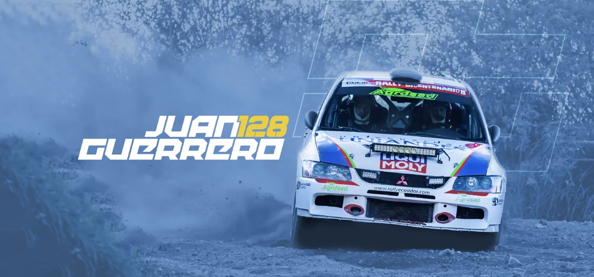
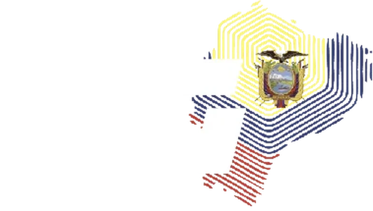
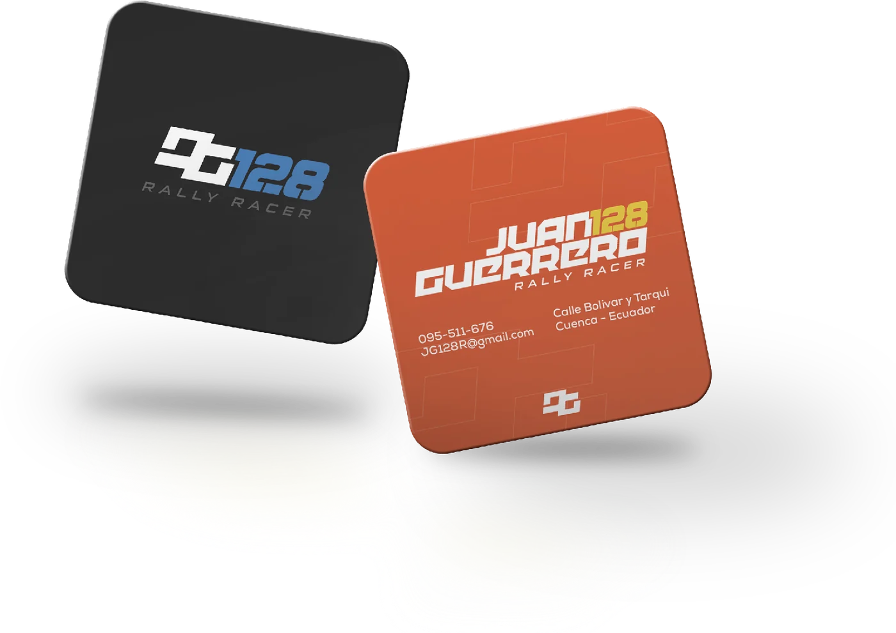
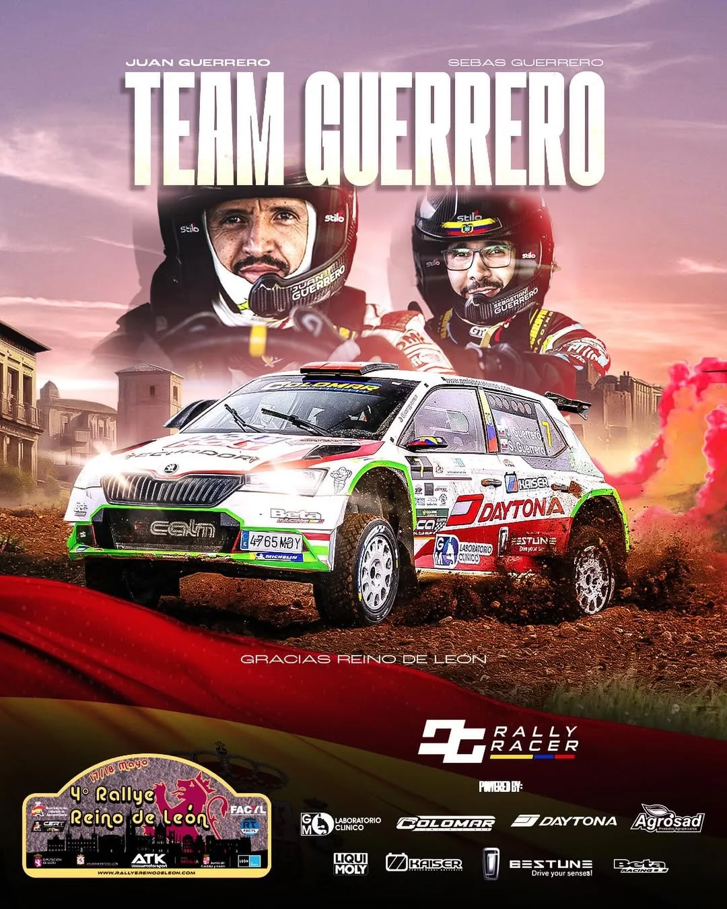
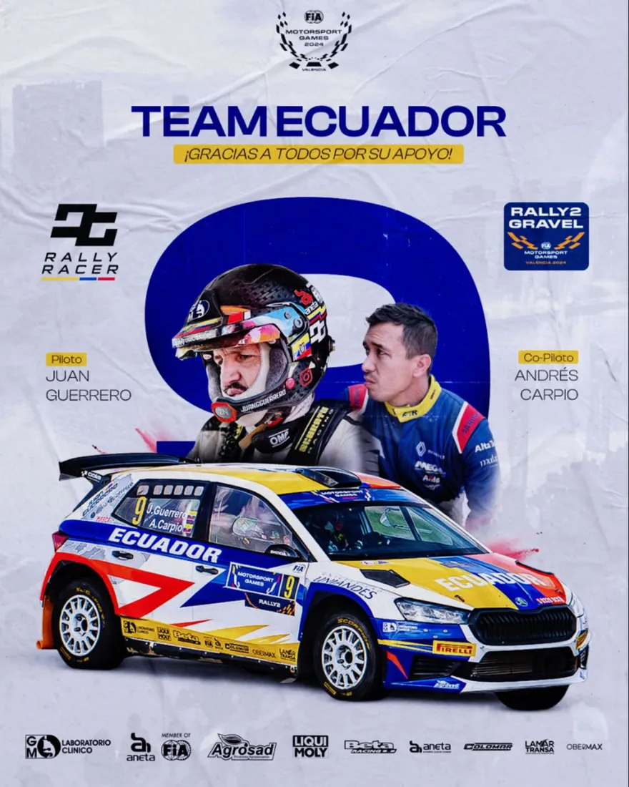
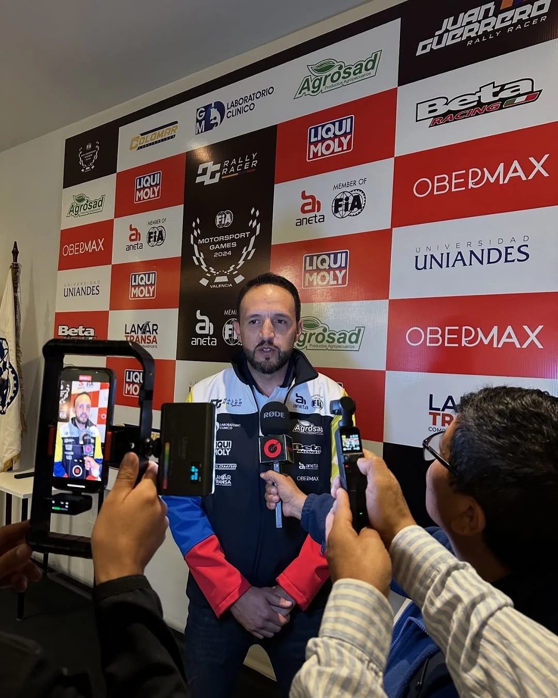
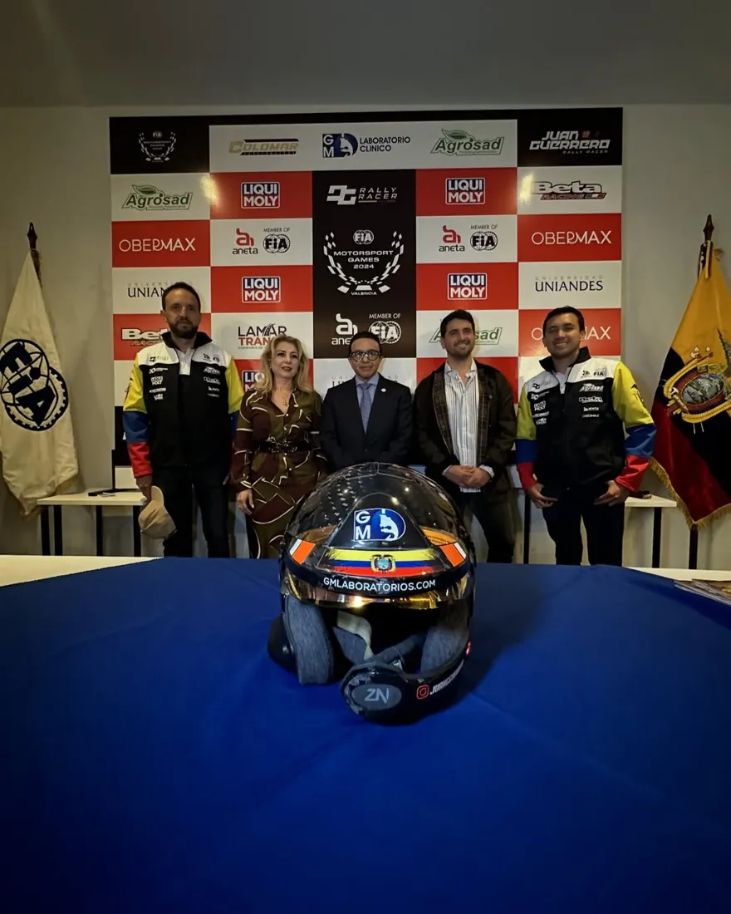
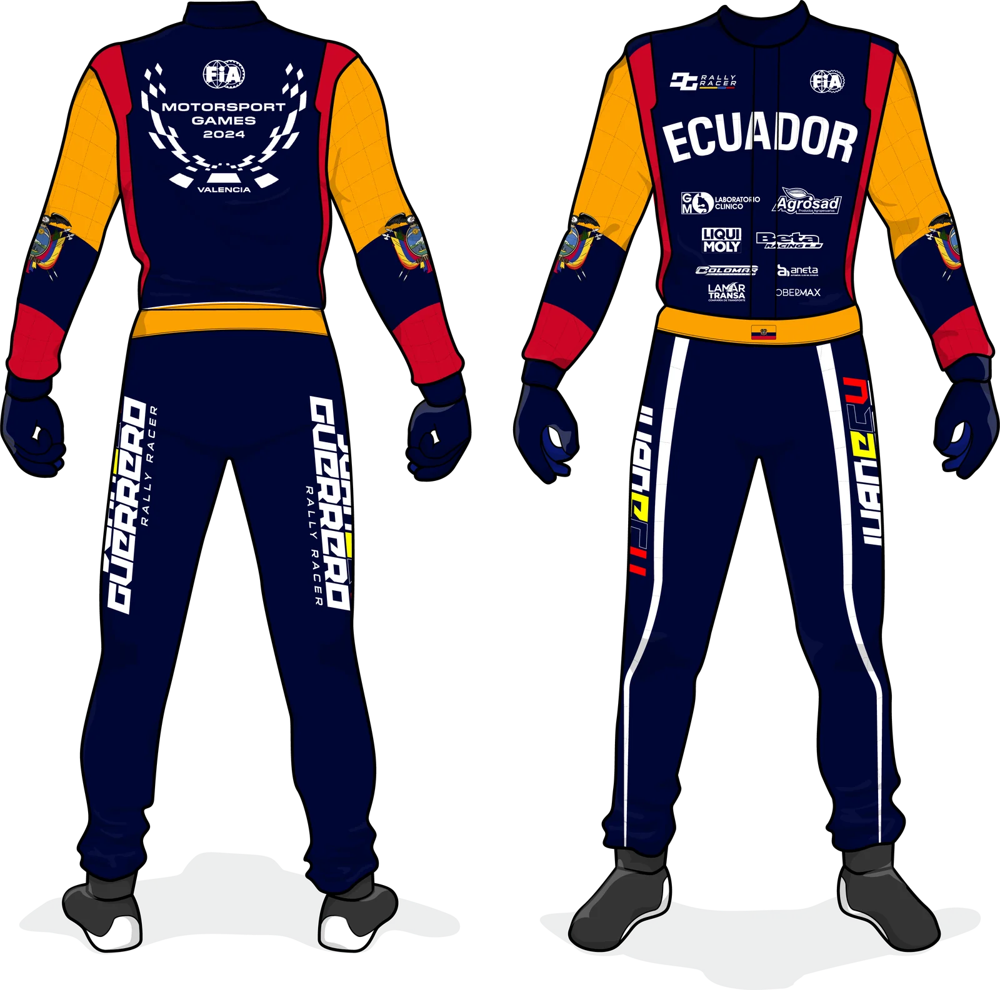
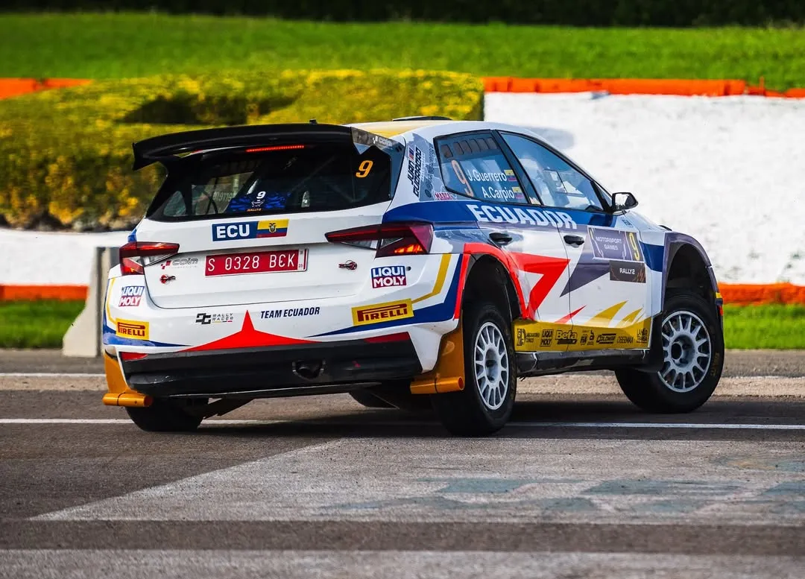
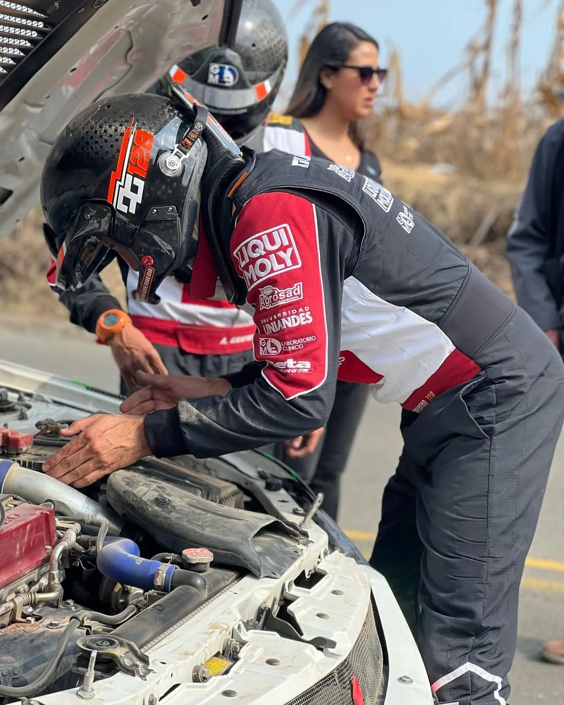

01
Isotipo, logo principal y variaciones
El concepto: J + G + bandera a cuadros + 128
Sus iniciales se cruzan con la bandera a cuadros y su número de competencia. La marca vive en color, en blanco y con el mapa del Ecuador.

02
Diseño de alto impacto
Papelería que se reconoce
Tarjetas en negro y naranja con el isotipo, el número y los datos de contacto: la marca se entrega en la mano.

03
Adaptaciones a espacios digitales
Cada fecha, una pieza con su marca
Afiches de equipo, de selección y de próxima válida con el mismo sistema gráfico y los auspiciantes integrados.



04
Adaptaciones a espacios físicos
De la rueda de prensa a la pista
Backing, traje de competencia, auto y accesorios: la identidad se ve donde están las cámaras.




